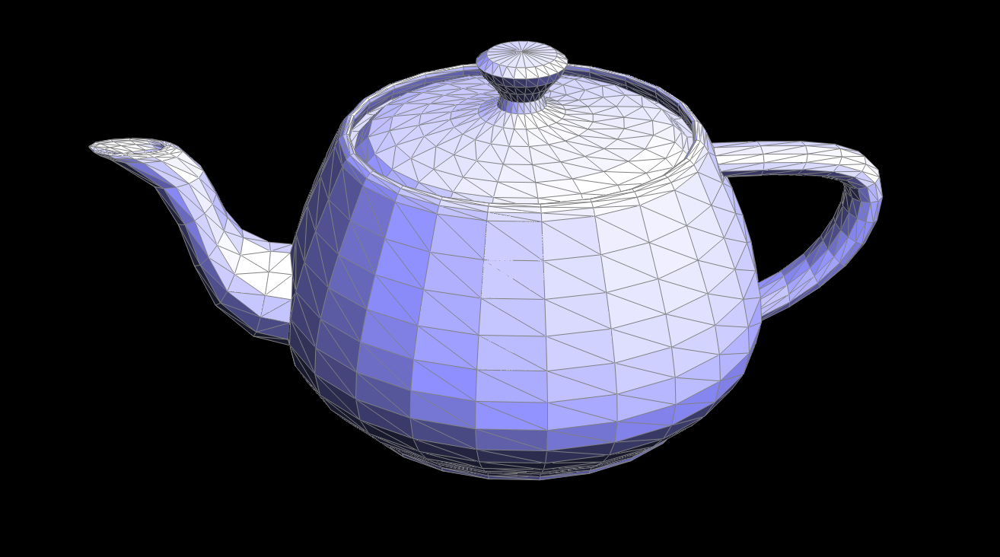

CS184/284A Spring 2025 Homework 2 Write-Up
Link to webpage: hw-webpages-peace-lily/hw2/index.html
Link to GitHub repository: cal-cs184-student/teams/monstera
Overview
Geometry is an intrinsic part of the natural world, and in this project we focused on representing curvature in both 2-dimensional and 3-dimensional objects. We began by representing bezier curves (2-dimensional) and bezier surfaces (a three dimensional surface that builds on the algorithm for bezier curves). To represent the visual details of geometry, we want to include shading for our shapes, so we implemented area-weighted vertex normals for Phong shading, which is smoother than flat shading.
For a given mesh, there may be instances where we want to make it more detailed, which can be done by upsampling the mesh and dividing each triangle in the mesh into smaller triangles. The adjusted and new vertices for these triangles can be calculated based on the old vertices, and the mesh is mutated using an edge flipping and splitting procedure that we implemented in parts 4 and 5. Upsampling allows us to estimate additional detail for our mesh based on the data we are provided, letting us render more detail from potentially limited data.
Throughout this project, we found it interesting how much we can use geometry to estimate parts of our image (i.e. approximating shading and upsampling the mesh) to create a more detailed and smoother image. We imagine that this process of estimation/interpolation saves a lot of time when creating data for images to render. In the context of video games, meshes seem optimized to balance the load between providing data for an image and rendering an image smoothly, which places fewer constraints on designers as they create character designs.
Section I: Bezier Curves and Surfaces
Part 1: Bezier curves with 1D de Casteljau subdivision
De Casteljau's involves recursively linearly interpolating points in order to estimate a smooth curve between points. De Casteljau's begins with the first point, and evaluates the points in pairs in order to produce a new point. Given two points b0 and b1, the new point is constructed using b0 and b1 and a parameter t. t lies somewhere between b0 and b1 and tells the algorithm how much to weight b0 and b1. A low value for t favors b0 while a higher value favors b1. Each iteration of De Casteljau's outputs a set of points with one less than the input. The algorithm ends when only one point remains and it is impossible to interpolate the points any further and the remaining point must lie on the final curve.Below, we can see the steps of de Casteljau's algorithm on a 6 point bezier curve.
|
|

|

|

|

|
|
|
|
|
Part 2: Bezier surfaces with separable 1D de Casteljau
The de Casteljau algorithm evaluates several control points to determine a curve. However, if we have multiple curves, we can use these to create a surface, or, in our case, a Bezier surface. Working with the coordinate system (u, v), we want to evaluate a set of bezier curves at a given parameter u. Our points for the surface are given to us in an nxn matrix, where each row represents a set of n control points, and we can run de Casteljau's on each row, parameterized by u. The result of this will give us n control points, parametrized by v, and we can use the de Casteljau algorithm to evaluate these points for a final ''moving'' curve. The final point resulting from these calculations lies on the Bezier surface at the point (u, v).Here is my handle
Here is my spout
(brought to you by Bezier surfaces!)
Section II: Triangle Meshes and Half-Edge Data Structure
Part 3: Area-weighted vertex normals
In order to implement smoother shading, we need to find area-weighted normal vectors for all vertices. I implement the following algorithm in order to accomplish this: For any given vertex, I iterate through the faces incident to the vertex by iterating through the half edges rooted at the vertex. I then access the vertices of the incident face, and use this to calculate the edges of the face. I use these edges to calculate the normal of the triangle, and weight the normal by the triangles' area. All of these weighted normals are summed together, and normalized by unit() which ensures the output is a normal vector.|

|

|
Part 4: Edge flip
Since the project uses a half-edge data structure, performing an edge flip required carefully updating half-edges, vertices, edges, and faces while maintaining correct connectivity. I first checked if the edge was flippable--if it was on a boundary, I returned immediately since boundary edges shouldn’t be flipped. After confirming the edge could be flipped, I identified all affected elements: two adjacent faces (f0 and f1), ten half-edges (h0 to h9), four vertices (v0, v1, v2, v3), and four edges (e0, e1, e2, e3). The goal was to update the edge so that instead of connecting (v0, v1), it would now connect (v2, v3).
I then reassigned half-edge connections to perform the flip. The connectivity of half-edges,
their twins, next pointers, and faces were updated accordingly using
Halfedge::setNeighbors(next, twin, vertex, edge, face). I made sure that every
half-edge had the correct next and twin pointers to maintain valid traversal across the mesh.
Before writing any code, I sketched out diagrams to visualize how the half-edge pointers needed to be reassigned. This made it much easier to avoid mistakes when implementing the flip. I also closely followed the spec’s advice on updating all pointers of all elements in the modified mesh, not just the ones that changed directly. That likely saved me a lot of debugging time because everything worked as expected on the first try.
|
|
|
The results show that the edge flip operation works correctly, with edges updating their connectivity as expected. Since I followed the spec meticulously and drew out everything carefully, the implementation process went smoothly without requiring much debugging.
Part 5: Edge split
For the edge split operation, I followed a similar approach to my edge flip implementation, starting by sketching diagrams of a simple mesh example to visualize how each element would be updated. The process involved identifying all the existing elements (faces, edges, half-edges, and vertices) and then carefully inserting new ones. I first created the necessary new elements: one new vertex, three new edges, six new half-edges, and two new faces. After that, I assigned half-edge neighbor relationships and updated all relevant pointers to maintain proper connectivity.
Implementing this took a while because I initially ran into segmentation faults. The issue was likely due to minor errors in setting neighbor relationships incorrectly, which caused the mesh traversal to break. Debugging this was a bit of a struggle, and I ended up having to revisit this part later because it was causing issues in Part 6. It seemed like the inconsistencies between how I structured my elements in Part 4 and this part were leading to unintended behavior when both operations were used together.
Eventually, I came back and fixed the issue by making sure my edge split logic matched
the assumptions made in Part 4. Later, I also updated the implementation to properly
set isNew values--marking edges that were created from splitting the original
edge as true while marking the newly inserted edges as false.
This was important for Part 6 since it relies on knowing which edges existed in the original mesh.
Debugging this mainly involved carefully reading through my code and comparing it to my initial diagrams to catch any inconsistencies. Similar to Part 4, I made debugging easier by ensuring all relevant pointers were explicitly set, even if some were redundant. That way, I had more control over how everything was being updated, making it easier to spot errors.
Here are screenshots showing bean.dae before and after performing edge splits:

|
|
Also, here are screenshots showing cube.dae before and after applying both edge splits and edge flips:
|
|
|
After making sure everything was implemented correctly, edge splits and flips worked well together, and Part 6 no longer had unexpected behavior.
Part 6: Loop subdivision for mesh upsampling
Loop subdivision was by far the most time-consuming part of the assignment, taking over eight hours to fully implement. My partner and I worked on it together, pair programming to make sure we didn’t overlook any details. We followed the recommended approach outlined in the skeleton code comments, which helped break things down into manageable steps instead of trying to figure everything out at once.
Here are brief summaries of how we approached each subpart:
-
6.1 - Compute new positions for old vertices: We originally iterated through faces and their vertices, but later realized we could just iterate through all vertices directly. Using the formula from the spec, we computed the new positions and stored them in
newPosition. We also setisNew = falseto mark these as original mesh vertices. -
6.2 - Compute new positions for edges: We iterated through edges and identified the four relevant vertices (A, B, C, and D) using a simple mesh diagram to guide us. With those vertices, we applied the given formula to compute the
newPositionfor edges. -
6.3 - Split edges: We iterated through edges again and checked the condition
!(e->isNew || e->halfedge()->vertex()->isNew || e->halfedge()->twin()->vertex()->isNew)to ensure we didn’t process newly created edges. If an edge met the condition, we split it, setisNew = truefor the newly created vertex, and set its position to the correspondingnewPositionfrom the edge. - 6.4 - Flip edges: We iterated through edges again and flipped those where only one of the adjacent vertices was new.
-
6.5 - Update final vertex positions: Lastly, we updated the positions of old vertices using the precomputed
newPositionvalues.
Debugging this part was frustrating because we weren’t sure if the issues were coming from this implementation or from Part 4 (flipEdge) or Part 5 (splitEdge). After completing the initial implementation, we ran into segmentation faults, which we eventually resolved by ensuring that edges created in Part 6 were correctly assigned isNew values. Even after that fix, the upsampled meshes still didn’t look quite right--some edges weren’t being flipped as expected.
At first, we thought the issue was with how we were calculating positions, but after checking our math, nothing seemed wrong. Eventually, I took a closer look at Parts 4 and 5 and found that my splitEdge function had a subtle flaw. It worked fine on its own, but when used alongside flipEdge, inconsistencies in how elements were ordered caused unexpected behavior. Once we fixed that, the upsampling finally worked correctly.
One interesting observation is that repeated subdivisions tend to round out sharp edges and corners. This makes sense since the subdivision process moves vertices closer to a weighted average of their neighbors. As a result, meshes with sharp edges (like a cube) start to lose their structure and become more spherical over multiple iterations. We found that pre-splitting certain edges before applying loop subdivision led to a more symmetric subdivision. This is likely because the initial cube had relatively few vertices, so making early adjustments had a significant impact on the final result.
In the end, this part was difficult, but breaking it down step by step and making sure to be extra careful with pointers helped a lot. While debugging was tedious, it was satisfying to finally see the upsampled meshes looking correct.